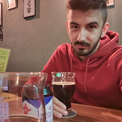
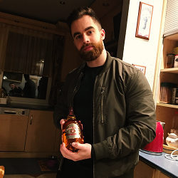

Rendelőnkben a maszkviselés kötelező! Köszönjük együttműködésüket!
A Szabadhegyi Állatklinika Csapata
üdvözli honlapunkon!
Bemutatjuk a Szabadhegyi Állatgyógyászati Centrum csapatát
A csapat tagjai:
- Dr. Buczkó Balázs vezető állatorvos
- Dr. Márta Richárd állatorvos
- Dr. Keresztes Mirella állatorvos
- Dr. Kovács Bence állatorvos
- Dr. Pál Tamara állatorvos
- Dr. Szlezák Szilárd állatorvos
- Süli Ákosné (Edit) asszisztens
- Eszlinger Anita asszisztens
- Horváth Szilvia asszisztens
- Szellős Judit asszisztens
- Mirejder Kinga asszisztens


Szolgáltatások
Belgyógyászat
- Általános betegvizsgálat
- Védőoltás
- Féregtelenítés
- Külső élősködők elleni kezelés
- Táplálkozási és nevelési tanácsadás
Sebészet és fogászat
- Has- és mellkassebészet
- Sürgősségi műtétek
- Daganat eltávolítások
- Szemészeti beavatkozások
- Fül-, orr-, gégeműtétek
Szülészet és szaporodásbiológia
- Ivartalanítás
- Mesterséges termékenyítés
- Ultrahangos vemhesség vizsgálat
- Szülészeti segítségnyújtás
- Császármetszés
Műszeres diagnosztika
- Hasi és kardiológiai ultrahang
- EKG vizsgálat
- Hematológiai vizsgálatok
- Biokémiai vizsgálatok
- Gomba kimutatás
Egyéb tevékenységek
- Microchipes megjelölés
- Állatútlevél kiállítás
- Első állapotfelmérés
- Idős állatok geriátriai vizsgálata
- Allergia szűrés
Kutya-, és cicakozmetika
- Nyírás
- Fürdetés
- Trimmelés
- Karomvágás
- Kiállításra való felkészítés